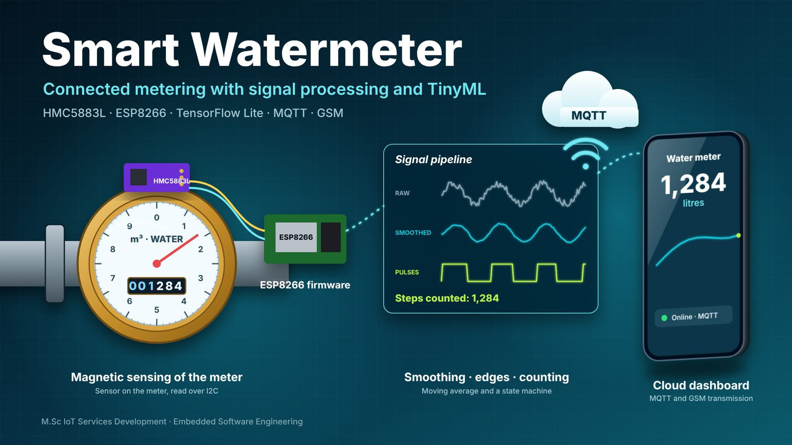
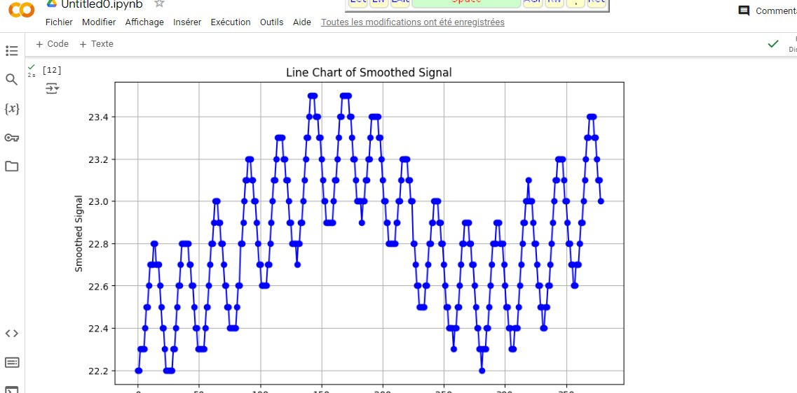
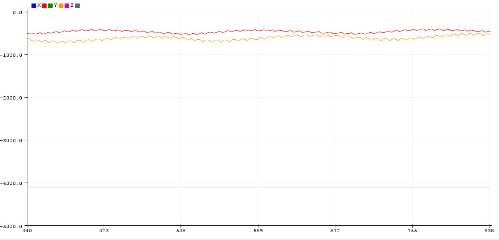
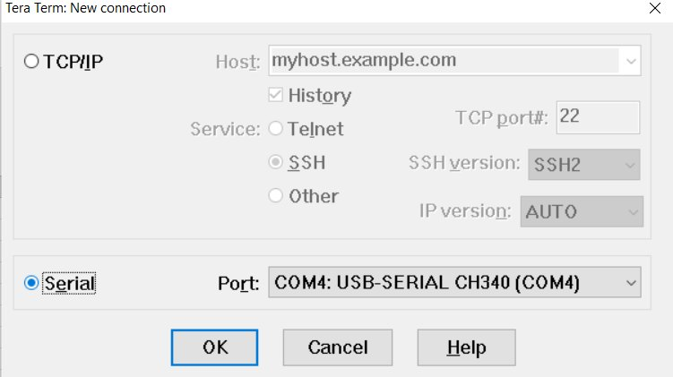
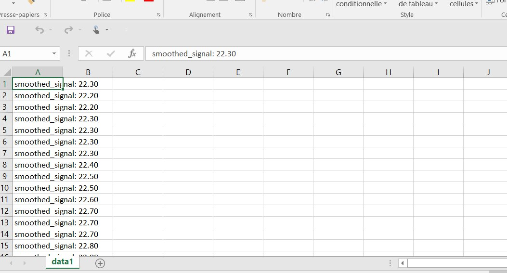
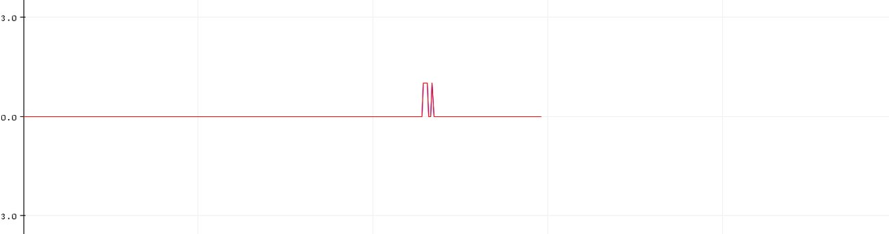
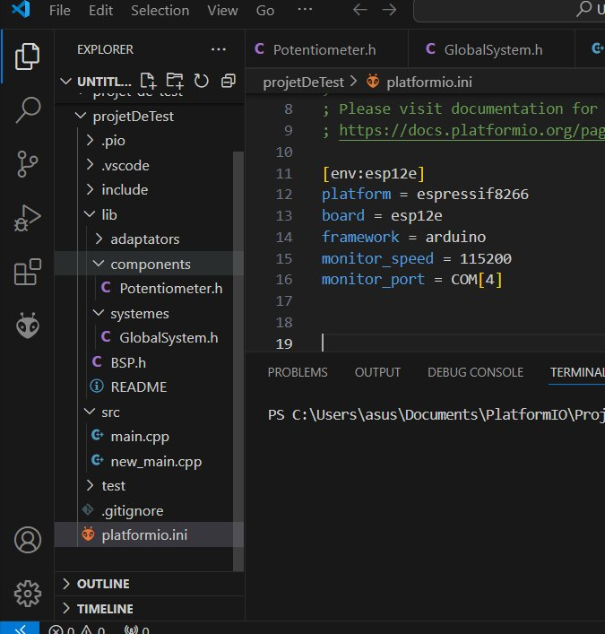

Smart and connected water metering

The smoothed signal analysed in Colab

The three magnetometer axes in the Arduino plotter
A smart and connected water metering system. A magnetometer reads the meter, an embedded algorithm cleans the signal and counts the flow, and the data travels to the cloud over MQTT and GSM.
Three steps turn the movement of a mechanical water meter into a reliable number you can follow remotely.
An HMC5883L magnetometer on the I2C bus measures the magnetic field around the meter on three axes.
A moving average smooths the signal. A state machine detects rising and falling edges and counts each cycle as one step.
The metering metrics are sent to the cloud with the MQTT protocol, using GSM where there is no Wi-Fi.
A simulation of the algorithm in the firmware: a moving average, then edge detection with a state machine, then step counting. Change the noise and the smoothing window and watch the count.
Collecting the magnetometer signal and analysing it with Python.
The Arduino plotter shows the three axes of the HMC5883L. X and Y oscillate while Z stays almost flat, so the useful signal is on X.

Tera Term connects to the CH340 USB-serial adapter on COM4 to record the values sent by the board.

The captured lines (smoothed_signal values) are saved to Excel, ready for analysis.
Pandas and Matplotlib plot the smoothed signal. It rises and falls between about 22.2 and 23.5, and each wave is one cycle to count.

Edge detection turns the smoothed wave into a rectangular signal. Each pulse is one counted step.
Embedded C++ on an ESP8266, and a small neural network ready to run on the device.

An ESP8266 (esp12e) project on the Arduino framework at 115200 baud. The code is layered: adaptors, components, systems and a BSP header.
The sketch reads the HMC5883L over I2C (address 0x1E) and applies three steps.
signal_states = FRONT_MOUNT;
if (states[0]==DESCENT &&
states[1]==MOUNT &&
states[2]==DESCENT)
counter++;A small neural network was trained in Python on 2,206 samples, then converted for the microcontroller.
The metering metrics are computed by an algorithm in C++ with an RTOS, based on the data analysis. The results are sent to the cloud with the MQTT protocol, using GSM for the transmission.
From data analysis to embedded AI and cloud transmission.
Smart and connected water meter system, August 2024.